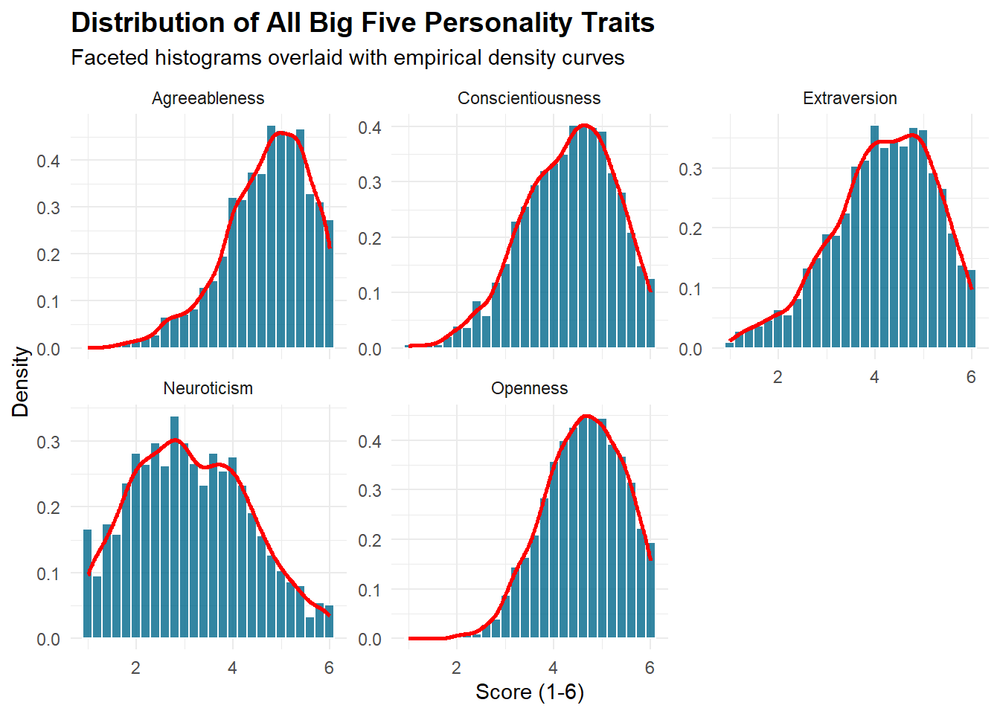
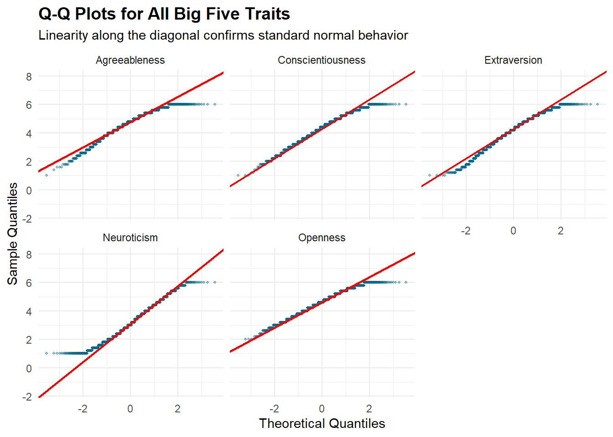
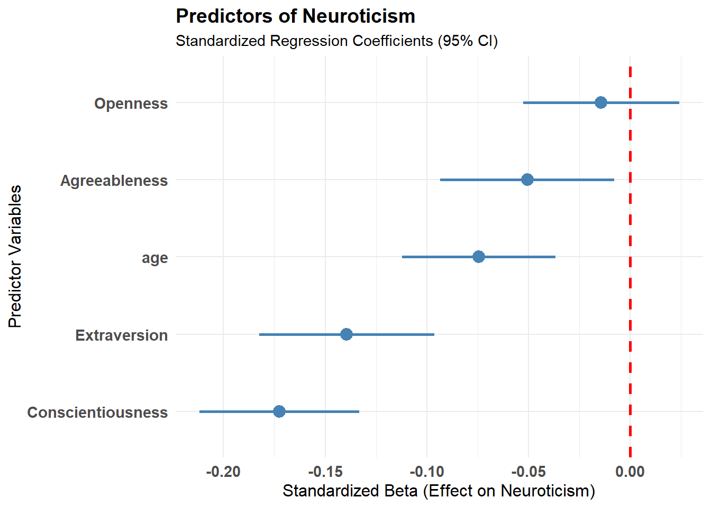

library(tidyverse) # Good for data wrangling (dplyr) and visualization (ggplot2)
library(psych) # Provides the 'bfi' dataset and psychometric functions
library(car) # Provides advanced statistical tests like Levene's test for variance
library(effectsize)
library(broom)Basic Data Analysis & Statistics Pipeline (Big Five Inventory)
Project Οverview
This project presents a complete, end-to-end data analysis workflow for cleaning, scoring, describing, and analyzing the 25 personality items included in the ‘bfi’ dataset distributed with the ‘psych’ (2026a) R package. The dataset contains five groups of five items, together with gender, education, and age variables. The analysis uses psych::bfi, a 25-item dataset (not to be confused with the 44-item BFI instrument). The five item groups are used here as the five Big Five personality dimensions. It demonstrates:
Data Cleaning & Wrangling
Reverse Coding & Scale Scoring
Reliability Analysis
Descriptive Statistics & Normality Checks
Inferential Statistics & Hypotheses
1. Data Cleaning & Wrangling
1.1 Enviroment set-up and package loading
Install the essential packages (‘tidyverse’ Wickham et al. (2019), ‘psych’ (2026b), ‘car’ Fox and Weisberg (2019), ‘effectsize’, ‘broom’ Robinson et al. (2026)) using the install.packages() function, if they are not already installed.
Then, load the packages that you have installed:
1.2 Data Import and Initial Inspection
Load the ‘Big Five Inventory’ dataset built into the ‘psych’ package & import it to your data environment:
data('bfi')
raw_data <- bfiInspect the structure to understand variable types (numeric, integers, etc.):
glimpse(raw_data)Rows: 2,800
Columns: 28
$ A1 <int> 2, 2, 5, 4, 2, 6, 2, 4, 4, 2, 4, 2, 5, 5, 4, 4, 4, 5, 4, 4, …
$ A2 <int> 4, 4, 4, 4, 3, 6, 5, 3, 3, 5, 4, 5, 5, 5, 5, 3, 6, 5, 4, 4, …
$ A3 <int> 3, 5, 5, 6, 3, 5, 5, 1, 6, 6, 5, 5, 5, 5, 2, 6, 6, 5, 5, 6, …
$ A4 <int> 4, 2, 4, 5, 4, 6, 3, 5, 3, 6, 6, 5, 6, 6, 2, 6, 2, 4, 4, 5, …
$ A5 <int> 4, 5, 4, 5, 5, 5, 5, 1, 3, 5, 5, 5, 4, 6, 1, 3, 5, 5, 3, 5, …
$ C1 <int> 2, 5, 4, 4, 4, 6, 5, 3, 6, 6, 4, 5, 5, 4, 5, 5, 4, 5, 5, 1, …
$ C2 <int> 3, 4, 5, 4, 4, 6, 4, 2, 6, 5, 3, 4, 4, 4, 5, 5, 4, 5, 4, 1, …
$ C3 <int> 3, 4, 4, 3, 5, 6, 4, 4, 3, 6, 5, 5, 3, 4, 5, 5, 4, 5, 5, 1, …
$ C4 <int> 4, 3, 2, 5, 3, 1, 2, 2, 4, 2, 3, 4, 2, 2, 2, 3, 4, 4, 4, 5, …
$ C5 <int> 4, 4, 5, 5, 2, 3, 3, 4, 5, 1, 2, 5, 2, 1, 2, 5, 4, 3, 6, 6, …
$ E1 <int> 3, 1, 2, 5, 2, 2, 4, 3, 5, 2, 1, 3, 3, 2, 3, 1, 1, 2, 1, 1, …
$ E2 <int> 3, 1, 4, 3, 2, 1, 3, 6, 3, 2, 3, 3, 3, 2, 4, 1, 2, 2, 2, 1, …
$ E3 <int> 3, 6, 4, 4, 5, 6, 4, 4, NA, 4, 2, 4, 3, 4, 3, 6, 5, 4, 4, 4,…
$ E4 <int> 4, 4, 4, 4, 4, 5, 5, 2, 4, 5, 5, 5, 2, 6, 6, 6, 5, 6, 5, 5, …
$ E5 <int> 4, 3, 5, 4, 5, 6, 5, 1, 3, 5, 4, 4, 4, 5, 5, 4, 5, 6, 5, 6, …
$ N1 <int> 3, 3, 4, 2, 2, 3, 1, 6, 5, 5, 3, 4, 1, 1, 2, 4, 4, 6, 5, 5, …
$ N2 <int> 4, 3, 5, 5, 3, 5, 2, 3, 5, 5, 3, 5, 2, 1, 4, 5, 4, 5, 6, 5, …
$ N3 <int> 2, 3, 4, 2, 4, 2, 2, 2, 2, 5, 4, 3, 2, 1, 2, 4, 4, 5, 5, 5, …
$ N4 <int> 2, 5, 2, 4, 4, 2, 1, 6, 3, 2, 2, 2, 2, 2, 2, 5, 4, 4, 5, 1, …
$ N5 <int> 3, 5, 3, 1, 3, 3, 1, 4, 3, 4, 3, NA, 2, 1, 3, 5, 5, 4, 2, 1,…
$ O1 <int> 3, 4, 4, 3, 3, 4, 5, 3, 6, 5, 5, 4, 4, 5, 5, 6, 5, 5, 4, 4, …
$ O2 <int> 6, 2, 2, 3, 3, 3, 2, 2, 6, 1, 3, 6, 2, 3, 2, 6, 1, 1, 2, 1, …
$ O3 <int> 3, 4, 5, 4, 4, 5, 5, 4, 6, 5, 5, 4, 4, 4, 5, 6, 5, 4, 2, 5, …
$ O4 <int> 4, 3, 5, 3, 3, 6, 6, 5, 6, 5, 6, 5, 5, 4, 5, 3, 6, 5, 4, 3, …
$ O5 <int> 3, 3, 2, 5, 3, 1, 1, 3, 1, 2, 3, 4, 2, 4, 5, 2, 3, 4, 2, 2, …
$ gender <int> 1, 2, 2, 2, 1, 2, 1, 1, 1, 2, 1, 1, 2, 1, 1, 1, 2, 1, 2, 2, …
$ education <int> NA, NA, NA, NA, NA, 3, NA, 2, 1, NA, 1, NA, NA, NA, 1, NA, N…
$ age <int> 16, 18, 17, 17, 17, 21, 18, 19, 19, 17, 21, 16, 16, 16, 17, …The dataset contains 2,800 rows and 28 columns in the package version used by the original project. We have 25 items (A1-O5) that measure the five major personality factors using 5 items per factor on a 1-6 Likert scale, plus gender, education and age.
To get basic descriptive statistics for all variables to spot obvious anomalies, use the summary() function:
summary(raw_data) A1 A2 A3 A4 A5
Min. :1.000 Min. :1.000 Min. :1.000 Min. :1.0 Min. :1.00
1st Qu.:1.000 1st Qu.:4.000 1st Qu.:4.000 1st Qu.:4.0 1st Qu.:4.00
Median :2.000 Median :5.000 Median :5.000 Median :5.0 Median :5.00
Mean :2.413 Mean :4.802 Mean :4.604 Mean :4.7 Mean :4.56
3rd Qu.:3.000 3rd Qu.:6.000 3rd Qu.:6.000 3rd Qu.:6.0 3rd Qu.:5.00
Max. :6.000 Max. :6.000 Max. :6.000 Max. :6.0 Max. :6.00
NAs :16 NAs :27 NAs :26 NAs :19 NAs :16
C1 C2 C3 C4 C5
Min. :1.000 Min. :1.00 Min. :1.000 Min. :1.000 Min. :1.000
1st Qu.:4.000 1st Qu.:4.00 1st Qu.:4.000 1st Qu.:1.000 1st Qu.:2.000
Median :5.000 Median :5.00 Median :5.000 Median :2.000 Median :3.000
Mean :4.502 Mean :4.37 Mean :4.304 Mean :2.553 Mean :3.297
3rd Qu.:5.000 3rd Qu.:5.00 3rd Qu.:5.000 3rd Qu.:4.000 3rd Qu.:5.000
Max. :6.000 Max. :6.00 Max. :6.000 Max. :6.000 Max. :6.000
NAs :21 NAs :24 NAs :20 NAs :26 NAs :16
E1 E2 E3 E4
Min. :1.000 Min. :1.000 Min. :1.000 Min. :1.000
1st Qu.:2.000 1st Qu.:2.000 1st Qu.:3.000 1st Qu.:4.000
Median :3.000 Median :3.000 Median :4.000 Median :5.000
Mean :2.974 Mean :3.142 Mean :4.001 Mean :4.422
3rd Qu.:4.000 3rd Qu.:4.000 3rd Qu.:5.000 3rd Qu.:6.000
Max. :6.000 Max. :6.000 Max. :6.000 Max. :6.000
NAs :23 NAs :16 NAs :25 NAs :9
E5 N1 N2 N3
Min. :1.000 Min. :1.000 Min. :1.000 Min. :1.000
1st Qu.:4.000 1st Qu.:2.000 1st Qu.:2.000 1st Qu.:2.000
Median :5.000 Median :3.000 Median :4.000 Median :3.000
Mean :4.416 Mean :2.929 Mean :3.508 Mean :3.217
3rd Qu.:5.000 3rd Qu.:4.000 3rd Qu.:5.000 3rd Qu.:4.000
Max. :6.000 Max. :6.000 Max. :6.000 Max. :6.000
NAs :21 NAs :22 NAs :21 NAs :11
N4 N5 O1 O2 O3
Min. :1.000 Min. :1.00 Min. :1.000 Min. :1.000 Min. :1.000
1st Qu.:2.000 1st Qu.:2.00 1st Qu.:4.000 1st Qu.:1.000 1st Qu.:4.000
Median :3.000 Median :3.00 Median :5.000 Median :2.000 Median :5.000
Mean :3.186 Mean :2.97 Mean :4.816 Mean :2.713 Mean :4.438
3rd Qu.:4.000 3rd Qu.:4.00 3rd Qu.:6.000 3rd Qu.:4.000 3rd Qu.:5.000
Max. :6.000 Max. :6.00 Max. :6.000 Max. :6.000 Max. :6.000
NAs :36 NAs :29 NAs :22 NAs :28
O4 O5 gender education age
Min. :1.000 Min. :1.00 Min. :1.000 Min. :1.00 Min. : 3.00
1st Qu.:4.000 1st Qu.:1.00 1st Qu.:1.000 1st Qu.:3.00 1st Qu.:20.00
Median :5.000 Median :2.00 Median :2.000 Median :3.00 Median :26.00
Mean :4.892 Mean :2.49 Mean :1.672 Mean :3.19 Mean :28.78
3rd Qu.:6.000 3rd Qu.:3.00 3rd Qu.:2.000 3rd Qu.:4.00 3rd Qu.:35.00
Max. :6.000 Max. :6.00 Max. :2.000 Max. :5.00 Max. :86.00
NAs :14 NAs :20 NAs :223 1.3 Data Cleaning and Wrangling
In this step, we convert numeric categorical codes into meaningful labels and remove participants with missing demographic data. In order to understand the meaning of the codes, in this case, you can use the ?bfi function that opens the documentation for the BFI dataset:
clean_data <- raw_data %>% # Convert 'gender' (1, 2) and 'education' (1-5) into factors (categorical variables)
mutate(
gender = factor(gender,
levels = c(1, 2),
labels = c("Male", "Female"))
)During data cleaning, we identified that some participants reported implausible demographic responses (e.g., age \(< 13\)). We excluded these cases to remove likely data-entry errors and maintain data quality.
clean_data <- clean_data %>%
mutate(
# Explicitly convert factor or character values to numeric to prevent coercion errors
education = as.numeric(as.character(education)),
# Retain valid values (1–5) and assign NA to out-of-range entries
education = ifelse(education %in% 1:5, education, NA)
) %>%
# Filter age: Retain plausible survey responses (13 to 85 years)
filter(age >= 13 & age <= 85) %>%
# Remove impossible age-education combinations
mutate(
education = ifelse(age < 18 & education >= 3, NA, education)
)Convert ‘education’ (1-5) into factors (categorical variables):
clean_data <- clean_data %>%
mutate(
education = factor(education,
levels = c(1, 2, 3, 4, 5),
labels = c("HS", "Finished HS", "Some College", "College Graduate", "Graduate Degree"))
) %>%
# Remove rows that have NA (missing values) in the 3 demographic columns. Keep NAs in personality items (handled during scoring)
drop_na(gender, education, age) 2. Reverse Coding and Scale Scoring
Several items in the BFI are negatively scored. To calculate an accurate total score, we must reverse these item scores. For that we can use the reverse.code() function from the ‘psych’ (2026c) package:
# Define the keys for reverse scoring (-1 for reversed, 1 for normal) according to the BFI manual
items_keys <- c(
-1, 1, 1, 1, 1, # A1:A5 (A1 is reversed)
1, 1, 1, -1, -1, # C1:C5 (C4, C5 are reversed)
-1, -1, 1, 1, 1, # E1:E5 (E1, E2 are reversed)
1, 1, 1, 1, 1, # N1:N5 (No reversals)
1, -1, 1, 1, -1 # O1:O5 (O2, O5 are reversed)
)
# Complete reverse coding pipeline
new_scored_data <- clean_data %>%
select(A1:O5) %>%
reverse.code(keys = items_keys, items = ., mini = 1, maxi = 6) %>%
as.data.frame() %>%
setNames(colnames(clean_data %>%
select(A1:O5))) %>%
# Re-attach the demographic variables we left behind
bind_cols(clean_data %>%
select(gender, education, age), .) We computed the final composite scores by averaging the 5 items for each personality trait.
new_scored_data <- new_scored_data %>%
mutate(
Agreeableness = rowMeans(select(., A1, A2, A3, A4, A5), na.rm = TRUE),
Conscientiousness = rowMeans(select(., C1, C2, C3, C4, C5), na.rm = TRUE),
Extraversion = rowMeans(select(., E1, E2, E3, E4, E5), na.rm = TRUE),
Neuroticism = rowMeans(select(., N1, N2, N3, N4, N5), na.rm = TRUE),
Openness = rowMeans(select(., O1, O2, O3, O4, O5), na.rm = TRUE)
)3. Reliability Analysis (Internal Consistency)
Next we calculated Cronbach’s alpha for all 5 factors to ensure internal consistency across all subscales.
# Define the item sets for each scale (using the recoded/correct items)
traits_list <- list(
Agreeableness = select(new_scored_data, A1, A2, A3, A4, A5),
Conscientiousness = select(new_scored_data, C1, C2, C3, C4, C5),
Extraversion = select(new_scored_data, E1, E2, E3, E4, E5),
Neuroticism = select(new_scored_data, N1, N2, N3, N4, N5),
Openness = select(new_scored_data, O1, O2, O3, O4, O5)
)
# Calculate alpha for each trait using map_dfr()
alpha_results <- map_dfr(traits_list, ~{
a <- psych::alpha(.x, warnings = FALSE)
tibble(Cronbach_Alpha = round(a$total$raw_alpha, 2))
}, .id = "Trait")
# Print the raw alpha score (Values > 0.70 generally indicate acceptable reliability)
print(alpha_results)# A tibble: 5 × 2
Trait Cronbach_Alpha
<chr> <dbl>
1 Agreeableness 0.69
2 Conscientiousness 0.72
3 Extraversion 0.77
4 Neuroticism 0.81
5 Openness 0.61Internal Consistency Reliability
Internal consistency for the five composite personality scales was evaluated using Cronbach’s alpha. Neuroticism (\(\alpha = .81\)), Extraversion (\(\alpha = .77\)), and Conscientiousness (\(\alpha = .72\)) demonstrated acceptable to good reliability. Agreeableness showed marginal, yet practically adequate, internal consistency (\(\alpha = .69\)). The Openness to Experience scale exhibited lower reliability (\(\alpha = .61\)), which is common for this construct due to the broad nature of its items. Overall, the composite scores showed adequate reliability of our analysis.
4. Descriptive Statistics and Normality Checks
Before running parametric tests, we must generate descriptive statistics to understand the central tendency and dispersion of our data. Then, we check for normality to ensure that we meet the assumptions for parametric inferential statistics.
4.1 Descriptive Statistics of Categorical Data
We first examine the demographic profile (frequencies for categorical variables, mean/sd for age).
cat("\n--- GENDER & EDUCATION FREQUENCIES ---\n")
--- GENDER & EDUCATION FREQUENCIES ---new_scored_data %>%
count(gender, education) %>%
mutate(Percentage = paste0(round(n / sum(n) * 100, 1), "%")) %>%
print() gender education n Percentage
1 Male HS 93 3.6%
2 Male Finished HS 103 4%
3 Male Some College 354 13.8%
4 Male College Graduate 134 5.2%
5 Male Graduate Degree 151 5.9%
6 Female HS 131 5.1%
7 Female Finished HS 188 7.4%
8 Female Some College 876 34.3%
9 Female College Graduate 260 10.2%
10 Female Graduate Degree 266 10.4%cat("\n--- AGE DESCRIPTIVES ---\n")
--- AGE DESCRIPTIVES ---new_scored_data %>%
summarise(N = n(), Mean_Age = round(mean(age), 1), SD_Age = round(sd(age), 1),
Min = min(age), Max = max(age)) %>%
print() N Mean_Age SD_Age Min Max
1 2556 29.8 10.7 14 744.2 Descriptive Statistics of Personality Traits and Numeric Normality Checks
Descriptive statistics (mean, variance, SD, min, max) and normality indicators were calculated using the function psych::describe().
We avoid formal statistical tests for normality (e.g., Kolmogorov-Smirnov, Shapiro-Wilk) and Z-scores, because, due to their high statistical power in large samples, they flag even trivial deviations from normality as significant (p < .05). Therefore, following Kim (2013) , normality is assessed using visual inspection and absolute threshold values. Specifically, an absolute skewness value of \(< 2.0\) and an absolute kurtosis value of \(< 7.0\) indicate “substantial normality.”
# Descriptive Statistics of Personality Traits
cat("\n---DESCRIPTIVE ANALYSIS OF PERSONALITY TRAITS---\n")
---DESCRIPTIVE ANALYSIS OF PERSONALITY TRAITS---descrip_stats <- new_scored_data %>%
select(Agreeableness:Openness) %>%
psych::describe() %>%
as.data.frame() %>%
rownames_to_column(var = "Variable") %>%
mutate(Var = sd^2) %>%
select(Variable, Mean = mean, Var, SD = sd, Min = min, Max = max)
print(descrip_stats) Variable Mean Var SD Min Max
1 Agreeableness 4.693623 0.7670650 0.8758225 1.0 6
2 Conscientiousness 4.306247 0.8862499 0.9414085 1.0 6
3 Extraversion 4.168290 1.1203297 1.0584563 1.0 6
4 Neuroticism 3.134585 1.4227729 1.1928005 1.0 6
5 Openness 4.602902 0.6493348 0.8058131 1.4 6# Numeric Normality Checks
cat("\n---NUMERICAL NORMALITY (SKEWNESS & KURTOSIS)---\n")
---NUMERICAL NORMALITY (SKEWNESS & KURTOSIS)---normality_table <- new_scored_data %>%
select(Agreeableness:Openness) %>%
psych::describe() %>%
as.data.frame() %>%
select(n, mean, sd, skew, kurtosis) %>%
# Apply the abs() function for the absolute values of Skewness and Kurtosis
mutate( abs_skew = abs(skew), abs_kurtosis = abs(kurtosis) ) %>%
select(n, mean, sd, abs_skew, abs_kurtosis)
print(normality_table) n mean sd abs_skew abs_kurtosis
Agreeableness 2556 4.693623 0.8758225 0.7459344 0.3519804
Conscientiousness 2556 4.306247 0.9414085 0.4056887 0.2319785
Extraversion 2556 4.168290 1.0584563 0.4933660 0.1927482
Neuroticism 2556 3.134585 1.1928005 0.2345647 0.6451241
Openness 2556 4.602902 0.8058131 0.3415274 0.3476871Numerical Normality Evaluation (Skewness & Kurtosis)
Across all five personality dimensions, absolute skewness ranged from \(0.23\) to \(0.75\), and absolute kurtosis ranged from \(0.19\) to \(0.65\). These values fall well within the established criteria for substantial univariate normality, confirming that the distributions are suitable for parametric inferential analyses.
We can also assess normality by inspecting our data visually (Histogram with density curve and Q-Q plot).
# Visual check with histogram with density curve.
# Allows immediate detection of symmetry ("bell shape") and potential floor/ceiling effects
# Convert traits to long format for simultaneous plotting
scored_data_long <- new_scored_data %>%
pivot_longer(
cols = Agreeableness:Openness,
names_to = "Trait",
values_to = "Score"
)
# All histograms & density curves in a 5-panel grid
ggplot(scored_data_long, aes(x = Score)) +
geom_histogram(aes(y = after_stat(density)),
binwidth = 0.2,
boundary = 0.1,
fill = "deepskyblue4",
color = "white",
alpha = 0.8
) +
geom_density(color = "red", linewidth = 1) +
facet_wrap(~ Trait, scales = "free_y") +
# Add labels
labs(
title = "Distribution of All Big Five Personality Traits",
subtitle = "Faceted histograms overlaid with empirical density curves",
x = "Score (1-6)",
y = "Density"
) +
theme_minimal() +
theme(plot.title = element_text(face = "bold", size = 14))
Visual Distribution Assessment (Histograms & Density)
Visual inspection of the faceted histograms overlaid with empirical density curves confirms continuous, unimodal distributions across all Big Five traits:
- Agreeableness & Openness: Exhibit moderate negative skewness, with the majority of scores clustering toward the upper scale bounds (centered around 4.5–5.0).
- Conscientiousness & Extraversion: Display fairly symmetrical bell-shaped distributions centered around 4.0–4.5.
- Neuroticism: Demonstrates mild positive skewness, with scores broadly distributed around the lower-to-mid range (2.5–3.5).
Adjusting the histogram resolution (binwidth = 0.2) aligns with the exact 5-item scale steps. Overall, these distributions satisfy the requirements for parametric statistical analysis.
# All Q-Q Plots in a 5-panel grid
ggplot(scored_data_long, aes(sample = Score)) +
stat_qq(color = "deepskyblue4", alpha = 0.4, size = 0.8) +
stat_qq_line(color = "red", linewidth = 0.8) +
facet_wrap(~ Trait) +
# Add labels
labs(
title = "Q-Q Plots for All Big Five Traits",
subtitle = "Linearity along the diagonal confirms standard normal behavior",
x = "Theoretical Quantiles",
y = "Sample Quantiles"
) +
theme_minimal() +
theme(plot.title = element_text(face = "bold", size = 14))
Visual Inspection of the Q-Q plots
Visual inspection shows strong linear alignment along the diagonal across the central quantiles (-2 to 2 SD). As expected in bounded Likert measurements (1–6 scale), minor horizontal plateaus emerge at the upper (\(Y = 6.0\)) and lower (\(Y = 1.0\)) scale boundaries due to ceiling and floor limits.
Overall, the observed alignment strongly supports the assumption of substantial normality required for parametric testing.
5. Inferential Statistics & Hypotheses
To test our research questions, the following inferential analyses were conducted. Based on established personality literature and demographic variables, the following research questions were asked:
RQ1: Do mean Neuroticism scores differ between male and female respondents?
RQ2: Does mean Conscientiousness differ across the five education categories?
RQ3: Are age, Extraversion Agreeableness, Conscientiousness and Openness statistically associated with Neuroticism when entered together as predictors?
Research Question 1
First, we are going to examine whether there is a statistically significant difference in Neuroticism levels between male and female participants by conducting a Welch’s Independent Samples t-test. The following hypotheses were tested:
Null Hypothesis (\(H_0\)): Gender has no effect on Neuroticism. The mean scores of both groups are equal (\(\mu_{\text{men}} = \mu_{\text{women}}\)).
Alternative Hypothesis (\(H_1\)): There is a significant difference, with females expected to score higher in Neuroticism compared to males (\(\mu_{\text{men}} \neq \mu_{\text{women}}\)).
Before comparing group means, it is mandatory to evaluate whether the variance of responses is roughly equal across both groups (homogeneity of variances) by running a Levene’s test. If Levene’s test indicates heterogeneity, conducting Welch’s formula automatically adjusts the degrees of freedom (\(df\)) to prevent inflated Type I error rates (false positives). Levene’s test and the variance-inflation diagnostic are provided by the ‘car’ package.
Also, reporting statistical significance (\(p < .05\)) is insufficient with large sample sizes. Researchers must also report the magnitude of the observed effect by calculating Cohen’s d effect size. Cohen’s d is reported by using the ‘effectsize’ package.
# INDEPENDENT SAMPLES T-TEST (GENDER vs. NEUROTICISM)
# Homogeneity of Variance Check (Levene's Test)
levene_t_test <- car::leveneTest(Neuroticism ~ gender, data = new_scored_data)
print(levene_t_test)Levene's Test for Homogeneity of Variance (center = median)
Df F value Pr(>F)
group 1 3.3134 0.06883 .
2554
---
Signif. codes: 0 '***' 0.001 '**' 0.01 '*' 0.05 '.' 0.1 ' ' 1# Execute Welch's Independent Samples t-test
# (Welch's t-test is preferred as it does not assume strictly equal variances)
t_test_res <- t.test(Neuroticism ~ gender, data = new_scored_data)
print(t_test_res)
Welch Two Sample t-test
data: Neuroticism by gender
t = -5.9598, df = 1722.7, p-value = 3.057e-09
alternative hypothesis: true difference in means between group Male and group Female is not equal to 0
95 percent confidence interval:
-0.3894999 -0.1966122
sample estimates:
mean in group Male mean in group Female
2.937265 3.230322 # Calculate Cohen's d Effect Size
cohen_d_res <- effectsize::cohens_d(Neuroticism ~ gender, data = new_scored_data)
print(cohen_d_res)Cohen's d | 95% CI
--------------------------
-0.25 | [-0.33, -0.16]
- Estimated using pooled SD.# Extract exact Group Means and SDs for APA reporting
gender_descriptives <- new_scored_data %>%
group_by(gender) %>%
summarise(
N = n(),
Mean = round(mean(Neuroticism, na.rm = TRUE), 2),
SD = round(sd(Neuroticism, na.rm = TRUE), 2)
)
print(gender_descriptives)# A tibble: 2 × 4
gender N Mean SD
<fct> <int> <dbl> <dbl>
1 Male 835 2.94 1.15
2 Female 1721 3.23 1.2 Prior to interpreting the test, Levene’s test for equality of variances was evaluated,\(F(1, 2554) = 3.31, p = .06883\). Although the assumption of homogeneity of variance was technically met (\(p > .05\)), Welch’s adjusted t-test was utilized as a robust default. The use of Welch’s t-test robustly accounts for the imbalance of the unequal qroup sample sizes (\(n_{\text{female}} = 1721, n_{\text{male}} = 835\)) alongside any potential variance heterogeneity. The analysis revealed a statistically significant difference between genders, \(t(1722.70) = - 5.9598, p < .001\). Specifically, female respondents (\(M = 3.23, SD = 1.20\)) reported significantly higher levels of Neuroticism compared to male respondents \(M = 2.94, SD = 1.15\). To evaluate the substantive significance of the effect, Cohen’s d was computed (\(d = -0.25, 95\% \text { CI } [-0.33, -0.16]\)), representing a small effect size. Consequently, the null hypothesis (\(H_0\)) was rejected in favor of the alternative hypothesis (\(H_1\)).
Research Question 2
To answer our second research question (“Does mean Conscientiousness differ across the five education categories?”) we’ll utilize the one-way ANOVA test. The following hypotheses were tested:
Null Hypothesis (\(H_0\)): Educational attainment has no effect on Conscientiousness. All educational groups share the same mean score (\(\mu_1 = \mu_2 = \mu_3 = \mu_4 = \mu_5\)).
Alternative Hypothesis (\(H_1\)): At least one educational group differs significantly from the others in mean Conscientiousness.
Prior to conducting the one-way ANOVA, the fundamental parametric assumptions were reviewed:
Ιndependence of Observations: The data structure inherently satisfies this requirement, as participants completed the survey independently without clustering or paired measurements.
Assumption of Normality: As established in the preceding exploratory data analysis (EDA), the absolute skewness and kurtosis values for the Conscientiousness scale fell well within the robust thresholds for substantial normality (absolute Skewness \(< 2.0\), absolute Kurtosis \(< 7.0\)).
Homogeneity of Variances: To ensure that the variance of Conscientiousness is roughly equal across all educational levels, Levene’s test is evaluated immediately prior to interpreting the omnibus F-statistic.
If the variance diagnostic does not indicate a substantial departure from homogeneity, the conventional one-way ANOVA and Tukey HSD follow-up are used. If it does indicate unequal variances, Welch’s ANOVA and Games–Howell pairwise comparisons are used instead.
# ONE-WAY ANOVA (EDUCATION vs. CONSCIENTIOUSNESS)
# Descriptive Statistics by Education Level
education_desc <- new_scored_data %>%
group_by(education) %>%
summarise(
N = n(),
Mean = round(mean(Conscientiousness, na.rm = TRUE), 2),
SD = round(sd(Conscientiousness, na.rm = TRUE), 2)
)
print(education_desc)# A tibble: 5 × 4
education N Mean SD
<fct> <int> <dbl> <dbl>
1 HS 224 4.12 0.94
2 Finished HS 291 4.23 0.99
3 Some College 1230 4.39 0.91
4 College Graduate 394 4.22 0.94
5 Graduate Degree 417 4.28 0.98# Levene's Test for Homogeneity of Variance
levene_anova <- car::leveneTest(Conscientiousness ~ education, data = new_scored_data)
print(levene_anova)Levene's Test for Homogeneity of Variance (center = median)
Df F value Pr(>F)
group 4 1.3594 0.2456
2551 The assumption of homogeneity of variances was evaluated using Levene’s test, which indicated that variances were equal across groups, \(F(4, 2551) = 1.36, p = .246\).
# Execute the One-Way ANOVA
anova_model <- aov(Conscientiousness ~ education, data = new_scored_data)
summary(anova_model) Df Sum Sq Mean Sq F value Pr(>F)
education 4 21.7 5.437 6.184 5.98e-05 ***
Residuals 2551 2242.6 0.879
---
Signif. codes: 0 '***' 0.001 '**' 0.01 '*' 0.05 '.' 0.1 ' ' 1# Calculate Effect Size (η²)
eta_sq_res <- effectsize::eta_squared(anova_model, partial = FALSE)
print(eta_sq_res)# Effect Size for ANOVA (Type I)
Parameter | Eta2 | 95% CI
-----------------------------------
education | 9.60e-03 | [0.00, 1.00]
- One-sided CIs: upper bound fixed at [1.00].# Post-Hoc Comparisons (Tukey's HSD)
# Evaluates exactly WHICH educational groups differ from each other
tukey_res <- TukeyHSD(anova_model)
print(tukey_res) Tukey multiple comparisons of means
95% family-wise confidence level
Fit: aov(formula = Conscientiousness ~ education, data = new_scored_data)
$education
diff lwr upr p adj
Finished HS-HS 0.10989967 -0.117597080 0.33739642 0.6795864
Some College-HS 0.27229651 0.086367254 0.45822576 0.0006283
College Graduate-HS 0.09962004 -0.114552699 0.31379279 0.7099159
Graduate Degree-HS 0.16340820 -0.048612887 0.37542929 0.2186256
Some College-Finished HS 0.16239684 -0.004446028 0.32923970 0.0608355
College Graduate-Finished HS -0.01027962 -0.208109903 0.18755066 0.9999091
Graduate Degree-Finished HS 0.05350853 -0.141990309 0.24900738 0.9452803
College Graduate-Some College -0.17267646 -0.320837642 -0.02451528 0.0128842
Graduate Degree-Some College -0.10888830 -0.253921795 0.03614519 0.2428108
Graduate Degree-College Graduate 0.06378816 -0.116031172 0.24360749 0.8694221The ANOVA revealed a statistically significant main effect of education on Conscientiousness scores, \(F(4, 2551) = 6.18, p < .001\). To assess the practical significance of this finding, Eta-squared (\(\eta^2\)) was computed, yielding \(\eta^2 = 0.01\), which constitutes a small effect size. Because the omnibus F-statistic was significant, post-hoc comparisons were conducted utilizing Tukey’s Honestly Significant Difference (HSD) test to control for Type I error across multiple comparisons.
The post-hoc analysis demonstrated that participants with “Some College” education (\(M = 4.39, SD = 0.91\)) exhibited significantly higher Conscientiousness scores compared to those with a high school education (\(M = 4.12, SD = 0.94\)), \(p = .0006\)). Additionally, a significant difference was observed between “Some College” (\(M = 4.39, SD = 0.91\)) and “College Graduate” (\(M = 4.22, SD = 0.94\)) groups, \(p = .0129\). No other pairwise comparisons reached statistical significance. Based on these results, the null hypothesis (\(H_0\)) was rejected.
Research Question 3
A multiple linear regression analysis was conducted to examine whether age, Extraversion Agreeableness, Conscientiousness and Openness significantly predicted Neuroticism scores. The hypotheses are:
Null Hypothesis (\(H_0\)): Neither Age, Extraversion, Agreeableness, Conscientiousness nor Openness linearly predicts Neuroticism. Their regression coefficients in the model are equal to zero.
Alternative Hypothesis (\(H_1\)): At least one predictor variable significantly contributes to explaining the variance in Neuroticism scores.
The assumption of multicollinearity was evaluated using the Variance Inflation Factor (VIF).
# MULTIPLE LINEAR REGRESSION MODEL
# Fit the Multiple Linear Regression Model
# We add Agreeableness, Conscientiousness, and Openness as continuous predictors
mlreg_model <- lm(Neuroticism ~ age + Extraversion + Agreeableness + Conscientiousness + Openness, data = new_scored_data)
summary(mlreg_model)
Call:
lm(formula = Neuroticism ~ age + Extraversion + Agreeableness +
Conscientiousness + Openness, data = new_scored_data)
Residuals:
Min 1Q Median 3Q Max
-3.1485 -0.8819 -0.0696 0.8144 3.3521
Coefficients:
Estimate Std. Error t value Pr(>|t|)
(Intercept) 5.399038 0.181887 29.683 < 2e-16 ***
age -0.008275 0.002133 -3.879 0.000108 ***
Extraversion -0.157122 0.024759 -6.346 2.61e-10 ***
Agreeableness -0.068924 0.029693 -2.321 0.020354 *
Conscientiousness -0.218661 0.025365 -8.621 < 2e-16 ***
Openness -0.021241 0.028962 -0.733 0.463361
---
Signif. codes: 0 '***' 0.001 '**' 0.01 '*' 0.05 '.' 0.1 ' ' 1
Residual standard error: 1.14 on 2550 degrees of freedom
Multiple R-squared: 0.08766, Adjusted R-squared: 0.08588
F-statistic: 49 on 5 and 2550 DF, p-value: < 2.2e-16# Check Multicollinearity using Variance Inflation Factor (VIF)
# We want all values < 5.0
vif <- car::vif(mlreg_model)
print(vif) age Extraversion Agreeableness Conscientiousness
1.031254 1.349140 1.328611 1.120165
Openness
1.069943 # Calculate Standardized Regression Coefficients (Beta weights)
# This will show us which personality trait is the strongest predictor of Neuroticism
std_reg_beta <- effectsize::standardize_parameters(mlreg_model)
print(std_reg_beta)# Standardization method: refit
Parameter | Std. Coef. | 95% CI
-----------------------------------------------
(Intercept) | -1.69e-17 | [-0.04, 0.04]
age | -0.07 | [-0.11, -0.04]
Extraversion | -0.14 | [-0.18, -0.10]
Agreeableness | -0.05 | [-0.09, -0.01]
Conscientiousness | -0.17 | [-0.21, -0.13]
Openness | -0.01 | [-0.05, 0.02]All VIF values were well below the conventional threshold of 5.0 (ranging from 1.03 to 1.35), confirming the absence of problematic multicollinearity among the predictors.
The overall regression model was statistically significant, \(R^2 = .088\), adjusted \(R^2 = .086\), \(F(5, 2550) = 49.00, p < .001\). The model accounts for approximately 8.8% of the variance in Neuroticism.
Examining the individual predictors, it is clear that Conscientiousness emerged as the strongest significant negative predictor of Neuroticism (\(b = -0.22, \beta = -0.17, p < .001\)). Extraversion was also a significant negative predictor (\(b = -0.16, \beta = -0.14, p < .001\)). Age was a significant negative predictor (\(b = -0.01, \beta = -0.07, p < .001\)), as well as Agreeableness, that was also was a significant negative predictor (\(b = -0.07, \beta = -0.05, p = .020\)). Openness did not significantly predict Neuroticism (\(b = -0.02, \beta = -0.01, p = .463\)).
Based on these results, the alternative hypothesis (\(H_1\)) was supported, as four out of the five variables significantly contributed to the prediction of individual differences in Neuroticism.
Finally, we’ll develop a visualized MLR model. Since our model has 5 predictors and 1 interval variable, we’ll develop a coefficient plot to visualize the standardized betas and their 95% Confidence Intervals.
# VISUALIZING THE MULTIPLE LINEAR REGRESSION MODEL
# Re-fit the model using scale() to get Standardized Coefficients directly.
mlreg_model <- lm(scale(Neuroticism) ~ scale(age) +
scale(Extraversion) +
scale(Agreeableness) +
scale(Conscientiousness) +
scale(Openness),
data = new_scored_data)
# Tidy the model output into a clean dataframe for ggplot
model_data <- broom::tidy(mlreg_model, conf.int = TRUE) %>%
filter(term != "(Intercept)") %>% # Remove the intercept; we only care about predictors
arrange(estimate) # Sort by effect size for a cleaner plot
# Clean up the predictor names
model_data$term <- gsub("scale\\(", "", model_data$term)
model_data$term <- gsub("\\)", "", model_data$term)
# Build the Coefficient Plot
ggplot(model_data, aes(x = estimate, y = reorder(term, estimate))) +
# Add a vertical red line at zero (the line of "No Effect")
geom_vline(xintercept = 0, linetype = "dashed", color = "red", linewidth = 1) +
# Plot the standardized betas (dots) and their confidence intervals (lines)
geom_pointrange(aes(xmin = conf.low, xmax = conf.high),
color = "steelblue", size = 0.8, linewidth = 1) +
# Add labels
labs(
title = "Predictors of Neuroticism",
subtitle = "Standardized Regression Coefficients (95% CI)",
x = "Standardized Beta (Effect on Neuroticism)",
y = "Predictor Variables"
) +
theme_minimal() +
theme(
plot.title = element_text(face = "bold", size = 14),
axis.text = element_text(size = 11, face = "bold"),
axis.title = element_text(size = 12)
)
References
Fox, John, and Sanford Weisberg. 2019. An r Companion to Applied Regression. https://www.john-fox.ca/Companion/.
Kim, Hae-Young. 2013. “Statistical Notes for Clinical Researchers: Assessing Normal Distribution (2) Using Skewness and Kurtosis.” Restorative Dentistry & Endodontics 38 (1): 52. https://doi.org/10.5395/rde.2013.38.1.52.
Robinson, David, Alex Hayes, Simon Couch, and Emil Hvitfeldt. 2026. Broom: Convert Statistical Objects into Tidy Tibbles. https://doi.org/10.32614/CRAN.package.broom.
Wickham, Hadley, Mara Averick, Jennifer Bryan, et al. 2019. Welcome to the Tidyverse. 4: 1686. https://doi.org/10.21105/joss.01686.
William Revelle. 2026a. Psych: Procedures for Psychological, Psychometric, and Personality Research. https://CRAN.R-project.org/package=psych.
William Revelle. 2026b. Psych: Procedures for Psychological, Psychometric, and Personality Research. https://CRAN.R-project.org/package=psych.
William Revelle. 2026c. Psych: Procedures for Psychological, Psychometric, and Personality Research. https://CRAN.R-project.org/package=psych.